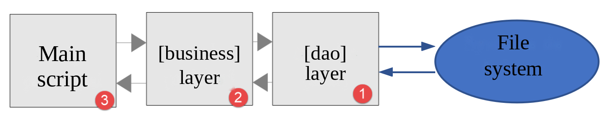

11. Übungsanwendung – Version 4
Die Anwendung zur Steuerberechnung setzt nun die folgende Schichtenstruktur um:

Wir verwenden die Komponenten aus Version 3 wieder und passen sie an die neue Architektur der Anwendung an. Man spricht von „Refactoring“ (Überarbeitung des Codes). Hier nehmen wir an, dass die von der Anwendung benötigten Daten in Textdateien gespeichert sind. Die Schicht [dao] übernimmt die Interaktionen mit diesen Dateien.
11.1. Verzeichnisstruktur der Skripte
Version 4 befindet sich im Ordner [scripts-console/tax/version-04]:
Der Ordner [Tests] enthält die automatisierten Tests für Version 4, die wir am Ende dieses Kapitels vorstellen.
11.2. Zwischen den Schichten ausgetauschte Objekte
Einige Elemente aus Version 3 übernehmen wir unverändert:
- Die Ausnahme [TaxException] ist die Ausnahme, die die Schicht [dao] auslöst, wenn sie auf ein Problem stößt, entweder beim Datenzugriff oder bei der Beschaffenheit der Daten (fehlerhafte Daten);
- die Klasse [Utilities] enthält Methoden, die für die Verwaltung von Textdateien nützlich sind (hier nur eine einzige Methode, [cutNewLineChar]);
- Die [readonly]-Klasse [TaxAdminData] kapselt die Daten der Steuerverwaltung. Auf sie wird über die statische Methode [TaxAdminData::fromJsonFile($taxAdminDataFilename)] (oder [TaxAdminData::fromArray($data)]) zugegriffen, die die Daten validiert und eine [TaxException]-Ausnahme auslöst, wenn die Daten ungültig sind.
Wir fügen eine neue Klasse hinzu, [TaxPayerData], die die Daten eines Steuerzahlers und die Ergebnisse seiner Steuerberechnung kapselt ([TaxPayerData.php]):
Kommentare
- Zeile 9: Wie [TaxAdminData] ist die Klasse [TaxPayerData] unveränderlich: Ihre Objekte wandern von einer Schicht zur anderen, ohne dass das Risiko besteht, dass sie unterwegs verändert werden;
- Zeilen 13–15: die Daten des Steuerzahlers, die zur Berechnung seiner Steuer erforderlich sind;
- Zeilen 17–21: Die Ergebnisse der Steuerberechnung. Dies sind nullbare Felder ([?int], [?float]) mit dem Standardwert [null]: Ein Objekt [TaxPayerData] wird zunächst von der Schicht [dao] erzeugt und enthält nur die Daten des Steuerzahlers aus [new TaxPayerData("yes", 2, 55555)], da die Steuer noch nicht berechnet wurde. Die Attributnamen entsprechen den JSON-Schlüsseln der Ergebnisdatei aus Version 3: Die Datei [results.txt] behält somit dasselbe Format;
- Zeilen 27–36: Da das Objekt unveränderlich ist, können ihm die Berechnungsergebnisse nicht hinzugefügt werden. Die Methode [withResults] gibt eine Kopie des Objekts zurück, ergänzt um die Ergebnisse. Sie verwendet den Operator [clone] aus PHP 8.5, der als zweiten Parameter ein Array der Attribute akzeptiert, die in der Kopie geändert werden sollen (siehe das Kapitel über Klassen). Der PHP-7-Kurs verwendete ein veränderbares Objekt mit acht Gettern und acht Settern;
- Zeilen 39–42: Die Methode [__toString] gibt den JSON-String des Objekts zurück. Er wird zum Schreiben der Ergebnisdatei verwendet.
11.3. Die Schicht [dao]
Hier konzentrieren wir uns auf die Schicht [1] unserer Anwendung:

11.3.1. Die Schnittstelle [InterfaceDao]
Die Schnittstelle der Schicht [dao] lautet wie folgt: [InterfaceDao.php]:
Kommentare
- Die Spezifikationen lauten wie folgt:
- Die Daten der Steuerzahler sind in einer Textdatei gespeichert;
- die Ergebnisse der Steuerberechnung werden in einer Textdatei gesichert;
- eventuelle Fehler werden in einer Textdatei gesichert;
- es ist nicht bekannt, in welchem Format die Daten der Steuerverwaltung vorliegen. Für jedes neue Format muss die Schnittstelle [InterfaceDao] durch eine neue Klasse implementiert werden;
- Methoden der Schnittstelle, die beim Datenzugriff auf einen schwerwiegenden Fehler stoßen, müssen eine [TaxException]-Ausnahme auslösen;
- Zeile 15: die Methode, die die Daten der Steuerzahler abruft, [marital status, number of children, annual salary]:
- der erste Parameter ist der Name der Textdatei, die diese Daten enthält;
- der zweite Parameter ist der Name der Textdatei, in der eventuell auftretende Fehler protokolliert werden sollen;
- Zeile 14: Der Typ [array] gibt nicht an, was das Array enthält. Der Dokumentationskommentar [/** @return TaxPayerData[] */] (PHPDoc-Syntax) legt fest, dass es sich um ein Array von Objekten des Typs [TaxPayerData] handelt. PHP ignoriert dies, aber die Erweiterung [PHP Intelephense] von [VS Code] nutzt es: Sie kennt dann den Typ der Array-Elemente und kann während der Eingabe deren Attribute vorschlagen;
- Zeile 18: die Methode, die die Daten der Steuerverwaltung abruft. Ihr werden keine Parameter übergeben, da wir nicht wissen, wie die Daten gespeichert sind;
- Zeile 22: die Methode, die die Ergebnisse der Steuerberechnung in einer Textdatei sichert, deren Name als Parameter übergeben wird.
Beim Schreiben der Schnittstelle [InterfaceDao] wissen wir, dass es je nach Speicherung der Daten der Steuerverwaltung verschiedene Möglichkeiten geben wird, die Methode [getTaxAdminData] zu implementieren. Die Schnittstelle [InterfaceDao] wird daher von verschiedenen Klassen implementiert, die jeweils eine bestimmte Speicherart dieser Daten behandeln (JSON-Datei, Datenbank, Webservice). Diese Klassen teilen sich jedoch gemeinsamen Code: die Implementierung der Methoden [getTaxPayersData] und [saveResults]. Wie wir im Kapitel über Traits gesehen haben, lässt sich dieser Anwendungsfall auf zwei Arten umsetzen:
- Wir erstellen eine abstrakte Klasse C, die den Code enthält, der den abgeleiteten Klassen gemeinsam ist. Die Klasse C implementiert die Schnittstelle I, aber bestimmte Methoden – die in den abgeleiteten Klassen definiert werden müssen – werden in der Klasse C als abstrakt deklariert, die damit selbst abstrakt ist. Anschließend erstellen wir von C abgeleitete Klassen C1 und C2, die jeweils die abstrakten Methoden ihrer Elternklasse C auf ihre eigene Weise implementieren;
- wir erstellen einen Trait T, der der abstrakten Klasse C der vorherigen Lösung fast gleicht. Dieser Trait implementiert die Schnittstelle I nicht, da das syntaktisch nicht möglich ist. Anschließend erstellen wir die Klassen C1 und C2, die die Schnittstelle I implementieren und den Trait T verwenden. Diesen Klassen bleibt nur noch, die Methoden der Schnittstelle I zu implementieren, die der von ihnen importierte Trait T nicht implementiert.
In diesem Beispiel verwenden wir einen Trait [TraitDao]. In Version 3 wurde eine abstrakte Klasse verwendet.
11.3.2. Der Trait [TraitDao]
Der Code des Traits [TraitDao] lautet wie folgt: [TraitDao.php]:
Kommentare
- Zeile 9: Hier definieren wir einen Trait, keine Klasse;
- Zeile 12: eine Konstante für das Feldtrennzeichen (PHP 8.2), typisiert (PHP 8.3): das Feldtrennzeichen einer Zeile der Steuerzahlerdatei. Sie wird zu einer Konstante der Klasse, die den Trait verwendet, und mit der Notation [self::SEPARATOR] verwendet;
- Zeile 15: Ab PHP 8.3 wird das Attribut [#[\Override]] auf einer Trait-Methode akzeptiert. Das wird in der Klasse geprüft, die den Trait verwendet: Hier muss die Methode einer Methode der Schnittstelle [InterfaceDao] entsprechen, die diese Klasse implementiert;
- Zeilen 16–74: Die Methode [getTaxPayersData] implementiert die gleichnamige Methode der Schnittstelle [InterfaceDao]. Sie ruft die Daten der Steuerzahler [marital status, number of children, annual salary] aus der Textdatei mit dem Namen [$taxPayersFilename] ab. Sie gibt diese Daten in Form eines Arrays [$taxPayersData] zurück, das Elemente des Typs [TaxPayerData] enthält (Zeile 58);
- Die Methode [getTaxPayersData] ähnelt stark der Methode [AbstractBaseTax::executeBatchTaxes] aus Version 3, mit folgenden Unterschieden:
- Die Methode [getTaxPayersData] ruft nur die Daten der Steuerzahler ab. Sie führt keine Steuerberechnungen durch: Das ist die Aufgabe der Schicht [business];
- Wie die Methode [executeBatchTaxes] markiert sie fehlerhafte Zeilen. Hier werden die Fehler zunächst in einem Array namens [$errors] gesammelt, das am Ende der Verarbeitung in eine Textdatei geschrieben wird (Zeile 71). Je nach Situation kann dieses Array leer sein oder nicht. Eine fehlerhafte Zeile löst keine Ausnahme mehr aus: Es ist Sache des aufrufenden Codes, die Fehlerdatei auszuwerten;
- bei einem schwerwiegenden Fehler wird eine [TaxException]-Ausnahme ausgelöst (Zeile 25, Zeile 64);
- Zeilen 23–26: Die Datei wird vor der Struktur [try / finally] geöffnet. Schlägt das Öffnen der Datei fehl, wird eine Ausnahme ausgelöst, und es gibt nichts zu schließen. Gelingt es, stellt die Klausel [finally] (Zeilen 66–69) sicher, dass die Datei geschlossen wird, unabhängig davon, ob eine Ausnahme auftritt. Dieses Vorgehen erspart die Prüfung „Wurde die Datei geöffnet?“, die in Version 3 vorkam;
- Zeilen 62–65: Beachten Sie die Verarbeitung beim Verlassen der Leseschleife. Die Funktion [fgets] hat den Nachteil, dass sie [false] sowohl dann zurückgibt, wenn der Lesevorgang das Dateiende erreicht, als auch dann, wenn er aufgrund eines Fehlers scheitert. Um beide Fälle zu unterscheiden, prüfen wir mit der Funktion [feof], ob das Dateiende erreicht wurde. Ist das nicht der Fall, ist ein Fehler aufgetreten, und es wird eine Ausnahme ausgelöst;
- Zeilen 78–82: Implementierung der Methode [saveResults] der Schnittstelle [InterfaceDao]. Jedes Element [TaxPayerData] des Arrays wird von der Funktion [strval] in einen String umgewandelt, die die Methode [__toString] des Objekts aufruft: Das liefert dessen JSON-String. [strval(...)] bezeichnet die Funktion [strval] selbst (First-Class-Callable, PHP 8.1);
- Zeilen 85–92: Die private Methode [saveLines] schreibt ein Array von Zeilen in eine Textdatei, wobei jede Zeile mit dem Zeilenendezeichen \n abgeschlossen wird;
- Zeile 89: Die PHP-Funktion [file_put_contents] schreibt einen String in eine Textdatei. Sie öffnet die Datei, schreibt den String hinein und schließt die Datei. Tritt ein Fehler auf, gibt sie [false] zurück. In diesem Fall gibt PHP außerdem eine Warnung aus. Der Operator [@] unterdrückt diese Warnung: Der Fehler wird über die in der nächsten Zeile ausgelöste Ausnahme mit einer klareren Meldung gemeldet.
Der Trait [TraitDao] hat zwei der Methoden der Schnittstelle [InterfaceDao] implementiert: [getTaxPayersData] und [saveResults]. Es bleibt noch die Methode [getTaxAdminData] zu implementieren, die die Daten der Steuerverwaltung abruft.
11.3.3. Die Klasse [DaoTaxWithTaxAdminDataInJsonFile]
Die Klasse [DaoTaxWithTaxAdminDataInJsonFile] implementiert die Schnittstelle [InterfaceDao] wie folgt:
Kommentare
- Zeile 9: Die Klasse [DaoTaxWithTaxAdminDataInJsonFile] implementiert die Schnittstelle [InterfaceDao];
- Zeile 12: Die Klasse verwendet den Trait [TraitDao], der, wie wir wissen, die Methoden [getTaxPayersData] und [saveResults] der Schnittstelle [InterfaceDao] implementiert. Der Klasse bleibt nur noch, die Methode [getTaxAdminData] zu implementieren, die die Daten der Steuerverwaltung abruft;
- Zeile 15: das Attribut vom Typ [TaxAdminData] , das von der Methode [getTaxAdminData] zurückgegeben wird. Es wird vom Konstruktor initialisiert;
- Zeile 21: Die Daten der Steuerverwaltung werden aus der JSON-Datei gelesen. Fehlt die Datei oder ist sie ungültig, wird eine [TaxException]-Ausnahme an den aufrufenden Code ausgelöst.
Damit ist die Schicht [dao] unserer Anwendung fertig: Wir haben eine Klasse, die die von uns definierte Schnittstelle [InterfaceDao] vollständig implementiert. Wir können nun zur Schicht [business] übergehen.
11.4. Die Schicht [business]
Wir implementieren nun die Schicht [2] unserer Architektur:

11.4.1. Die Schnittstelle [InterfaceBusiness]
Die Schnittstelle der Schicht [business] lautet wie folgt: [InterfaceBusiness.php]:
Kommentare
- Zeile 13: Die Schicht [business] kann den Steuerbetrag eines bestimmten Steuerzahlers berechnen, sofern ihr folgende Angaben vorliegen: Familienstand, Anzahl der Kinder und Jahresgehalt. Die Methode [calculateTax] ist eine rein „fachliche“ Methode: Sie kümmert sich nicht um die Herkunft der Daten, die sie verwendet. Sie verwendet die Schicht [dao] nicht und löst daher keine Ausnahme aus;
- Zeile 17: Die Schicht [business] kann außerdem den Steuerbetrag für eine Gruppe von Steuerzahlern berechnen, deren Daten in der Textdatei mit dem Namen [$taxPayersFileName] gesammelt sind. Sie schreibt die Ergebnisse in die Textdatei mit dem Namen [$resultsFileName]. Nicht schwerwiegende Fehler werden in der Textdatei mit dem Namen [$errorsFileName] protokolliert. Die Methode [executeBatchTaxes] muss die Schicht [dao] aufrufen, die den Zugriff auf das Dateisystem übernimmt. Von der Schicht [dao] können dann Ausnahmen weitergereicht werden: Die Methode [executeBatchTaxes] fängt sie nicht ab; sie lässt sie bis zum Hauptskript weiterlaufen.
11.4.2. Die Klasse [Business]
Die Klasse [Business] implementiert die Schnittstelle [InterfaceBusiness] wie folgt:
Kommentare
- Zeile 9: Die Klasse [Business] implementiert die Schnittstelle [InterfaceBusiness], das heißt die Methoden [calculateTax] und [executeBatchTaxes];
- Zeile 12: das Objekt vom Typ [TaxAdminData], das die Daten der Steuerverwaltung kapselt. Diese Daten werden von der fachlichen Methode [calculateTax] benötigt;
- Zeilen 15–21: Der Konstruktor initialisiert die beiden Attribute der Klasse:
- das Attribut [$dao], eine Referenz auf die Schicht [dao], wird durch Promotion des Konstruktorparameters initialisiert. Das ist erforderlich, damit die Schicht [business] weiß, an wen sie sich wenden muss, wenn sie externe Daten benötigt. Beachten Sie, dass der Typ dieses Parameters der der Schnittstelle [InterfaceDao] ist, sodass die Klasse [Business] mit jeder Klasse arbeiten kann, die diese Schnittstelle implementiert. Der PHP-7-Kurs bot zusätzlich einen Setter [setDao] an: Dieser entfällt nun, da die Schicht [dao] ein für alle Mal über den Konstruktor injiziert wird;
- Das Attribut [$taxAdminData] wird durch den Aufruf der Methode [getTaxAdminData] der Schicht [dao] initialisiert;
- wir schließen daraus, dass bei der Ausführung der Methoden [calculateTax] und [executeBatchTaxes] beide Attribute [$dao] und [$taxAdminData] initialisiert sind. Der Test [$this->taxAdminData ??= $this->getTaxAdminData()] aus Version 3 ist nicht mehr nötig;
- Zeilen 26–77: Dieser Code stammt aus der Methode [AbstractBaseTax::calculateTax] aus Version 3. Dasselbe gilt für die privaten Methoden [calculateTax2], [getTaxableIncome], [getDiscount] und [getReduction], die hier nicht wiedergegeben sind.
Die Methode [Business::executeBatchTaxes] lautet wie folgt:
Kommentare
- Zeile 188: Die Methode muss die Methode [calculateTax] wiederholt für jeden Steuerzahler aufrufen, der in der Textdatei mit dem Namen [$taxPayersFileName] gefunden wird, und die Ergebnisse in die Textdatei mit dem Namen [$resultsFileName] schreiben. Eventuell auftretende nicht schwerwiegende Fehler werden in der Textdatei mit dem Namen [$errorsFileName] protokolliert. Die Methode löst selbst keine Ausnahmen aus, lässt aber die von der Schicht [dao] ausgelösten durch;
- Zeile 192: Die Daten der Steuerzahler werden bei der Schicht [dao] angefordert. Diese Schicht gibt ein Array von Elementen des Typs [TaxPayerData] zurück. Tritt hier eine Ausnahme auf, wird sie, da sie von keinem [catch] abgefangen wird, automatisch an den aufrufenden Code weitergereicht, und der Rest der Methode wird nicht ausgeführt;
- Zeilen 194–199: Die Funktion [array_map] wendet eine Funktion auf jedes Element des Arrays [$taxPayersData] an und gibt das Array der Ergebnisse zurück. Die angewendete Funktion ist eine Arrow-Funktion, die die Steuer des Steuerzahlers [$taxPayerData] berechnet und eine Kopie von [$taxPayerData] zurückgibt, die mit den Berechnungsergebnissen gefüllt ist (Zeile 195). Beachten Sie, dass die Arrow-Funktion [$this] verwendet: Eine Arrow-Funktion erfasst Variablen aus ihrem Kontext automatisch, einschließlich [$this];
- Zeile 201: Sobald die Steuer für alle Steuerzahler berechnet ist, werden die Ergebnisse in einer Textdatei gesichert. Diese Aufgabe übernimmt die Schicht [dao].
Im Allgemeinen ist die Schicht [business] recht einfach zu schreiben, da sie mit der Schicht [dao] kommuniziert, die den Datenzugriff und die damit verbundene Fehlerbehandlung übernimmt.
11.5. Das Hauptskript
Nun schreiben wir das Skript für die Schicht [3] unserer Architektur:

Das Hauptskript lautet wie folgt: [main.php]:
Kommentare
- Zeilen 10–18: Laden der Klassen, Schnittstellen und Traits der Anwendung. Ein Trait muss vor der Klasse geladen werden, die ihn verwendet;
- Zeile 21: der Name der Datei mit den Steuerzahlerdaten;
- Zeile 22: der Name der Ergebnisdatei;
- Zeile 23: der Name der Fehlerdatei;
- Zeile 24: der Name der JSON-Datei mit den Daten der Steuerverwaltung;
- Zeile 28: Erzeugung der Schicht [dao];
- Zeile 30: Erzeugung der Schicht [business] auf Grundlage der Schicht [dao];
- Zeile 32: Ausführung der Methode [executeBatchTaxes] der Schicht [business];
- Zeilen 34–37: Wie wir gesehen haben, können die Schichten [dao] und [business] Ausnahmen auslösen. Diese werden hier abgefangen.
11.6. Visuelle Tests
11.6.1. Test Nr. 1
Führen Sie das Skript [main.php] in einem Terminalfenster aus, das im Ordner [version-04] geöffnet ist:
Mit der Steuerzahlerdatei [taxpayersdata.txt] aus Version 3:
wird die folgende Fehlerdatei [errors.txt] erzeugt:
und die folgende Ergebnisdatei [results.txt]:
Dies sind die Ergebnisse von Version 3.
11.6.2. Test Nr. 2
Im Hauptskript weisen wir der Steuerzahlerdatei einen Dateinamen zu, der nicht existiert:
Die in der Konsole angezeigten Ergebnisse lauten wie folgt:
Es wird nur die Meldung der Ausnahme angezeigt, die von der Schicht [dao] ausgelöst wurde. Im PHP-7-Kurs wurde die Funktion [fopen] auf der nicht vorhandenen Datei aufgerufen: Der PHP-Interpreter zeigte dann vor der Ausnahmemeldung eine Warnung an:
Der PHP-7-Kurs unterdrückte diese Meldung, indem er PHP mit der Anweisung [ini_set("display_errors", "0")] anwies, keine Fehler anzuzeigen. Das ist die richtige Konfiguration für einen Produktionsserver (Fehler werden dann in eine Logdatei geschrieben), aber während der Entwicklung müssen alle Meldungen von PHP sichtbar sein. Wir lösen die Warnung daher lieber gar nicht erst aus: Die Schicht [dao] verwendet die Funktion [is_readable], um vor dem Öffnen zu prüfen, ob die Datei gelesen werden kann.
11.7. [PHPUnit]-Tests
Visuelle Tests sind bei Weitem unzureichend:
- wir beschränken uns in der Regel auf nur wenige Tests;
- bei dieser visuellen Kontrolle passen wir womöglich nicht genau auf, und Details können uns entgehen.
In der professionellen Entwicklung der Praxis werden Tests als Code geschrieben und automatisch ausgeführt, oft nach jeder Codeänderung. Ziel ist es, die Tests so umfassend wie möglich zu gestalten. Dazu verwendet man Test-Frameworks.
Hier verwenden wir [PHPUnit] [https://phpunit.de/], das Standard-Test-Framework in PHP. Der PHP-7-Kurs verwendete das Framework [Codeception], das gewählt wurde, weil es in die Entwicklungsumgebung NetBeans integriert war – und das im Übrigen im Hintergrund PHPUnit nutzte. Wir nutzen nur einen kleinen Teil der Möglichkeiten von PHPUnit. Die Idee ist, nach jeder neuen Version der Übungsanwendung schnell überprüfen zu können, dass sie funktioniert. Erfolgreiche Tests geben dem Entwickler Vertrauen in den von ihm geschriebenen Code. Das ist ein wichtiger Faktor.
11.7.1. [PHPUnit] installieren
Wie viele PHP-Bibliotheken wird [PHPUnit] mit [Composer] installiert, dem PHP-Abhängigkeitsmanager, der in [Laragon] enthalten ist. Der Ordner [php8-oct-2026] mit dem Code des Kurses enthält eine Datei namens [composer.json] , die die vom Kurs verwendeten Bibliotheken auflistet. PHPUnit steht dort im Abschnitt [require-dev], der Bibliotheken enthält, die ausschließlich für die Entwicklung verwendet werden:
Falls noch nicht geschehen, öffnen Sie einfach ein Terminal im Ordner [php8-oct-2026] und geben Sie den folgenden Befehl ein:
[Composer] lädt dann alle in [composer.json] aufgeführten Bibliotheken in den Ordner [vendor] innerhalb von [php8-oct-2026] herunter. PHPUnit wird dort zusammen mit seiner ausführbaren Datei [vendor/bin/phpunit] installiert. In einem Projekt, das PHPUnit noch nicht enthält, würde man es mit dem Befehl [composer require --dev phpunit/phpunit] hinzufügen, der es herunterlädt und im Abschnitt [require-dev] der Datei [composer.json] einträgt.
Version 12 von PHPUnit erfordert PHP 8.3 oder höher. Die Dokumentation finden Sie unter [https://docs.phpunit.de/].
11.7.2. Die Konfigurationsdatei [phpunit.xml]
Der Ordner [php8-oct-2026] enthält außerdem die Konfigurationsdatei für PHPUnit, [phpunit.xml]. Wird PHPUnit aus diesem Ordner gestartet, verwendet es diese Datei automatisch:
Kommentare
- Zeile 5: Das XML-Schema, das die Syntax der Datei beschreibt. [VS Code] nutzt es, um die Datei zu validieren und mögliche Attribute vorzuschlagen;
- Zeile 6: In der Ergebnisanzeige werden keine Farben verwendet. Mit [true] können Sie erfolgreiche Tests im Terminal grün und fehlgeschlagene Tests rot anzeigen lassen;
- Zeilen 7–10: Ein Test, der eine Deprecation, einen Hinweis oder eine Warnung von PHP auslöst, gilt als fehlgeschlagen, selbst wenn seine Zusicherungen erfüllt sind. So wird sauberer PHP-8-Code erzwungen: Zum Beispiel würde die Verwendung eines in PHP 8.5 veralteten Features dazu führen, dass die Tests fehlschlagen;
- Zeilen 11–13: In diesen Fällen zeigt PHPUnit die Details der Meldung von PHP an;
- Zeile 14: der Ordner, in dem PHPUnit Informationen von einem Lauf zum nächsten ablegt (zum Beispiel fehlgeschlagene Tests, damit sie beim nächsten Mal zuerst ausgeführt werden);
- Zeilen 15–20: die Ordner mit dem getesteten Quellcode. [ignoreSuppressionOfDeprecations] gibt an, dass eine Deprecation auch dann gemeldet wird, wenn sie durch den Operator [@] unterdrückt wurde.
11.7.3. Tests der Schicht [dao]
Die Tests für Version 4 befinden sich im Ordner [version-04/Tests]. Eine PHPUnit-Testklasse:
- erweitert die Klasse [PHPUnit\Framework\TestCase];
- hat einen Namen, der auf [Test] endet, in einer gleichnamigen Datei: So findet PHPUnit die Testklassen in einem Ordner;
- hat öffentliche Testmethoden, deren Namen mit [test] beginnen;
- kann eine Methode namens [setUp] haben, die vor jeder Testmethode ausgeführt wird, und eine Methode namens [tearDown], die nach jeder Testmethode ausgeführt wird. Sie dienen dazu, die Testumgebung aufzubauen und anschließend wieder aufzuräumen. Jede Testmethode läuft so in einer frischen, von den anderen unabhängigen Umgebung.
In einer Testmethode werden die Ergebnisse mit Zusicherungsmethoden überprüft, die von [TestCase] geerbt werden, zum Beispiel:
Zusicherung | Prüft, dass |
[assertSame($expected, $actual)] | die beiden Werte identisch sind ([===]: gleicher Typ und gleicher Wert) |
[assertEquals($expected, $actual)] | die beiden Werte gleich sind ([==]) |
[assertEqualsWithDelta($expected, $actual, $delta)] | beide Zahlen bis auf [$delta] gleich sind |
[assertTrue($actual)], [assertFalse($actual)], [assertNull($actual)] | der Wert [true], [false] bzw. [null] ist |
[assertCount($n, $array)] | das Array [$n] Elemente hat |
[assertStringContainsString($substring, $string)] | der String die Teilzeichenfolge enthält |
[expectException($class)] | der folgende Code eine Ausnahme der angegebenen Klasse auslöst |
Um die Tests für eine Version der Übungsanwendung aufzubauen, verwenden wir eine Umgebung, die mit der des Hauptskripts [main.php] dieser Version identisch ist: Es werden dieselben Dateien geladen, und die Schichten werden auf dieselbe Weise aufgebaut.
Die Testklasse [DaoTest] lautet wie folgt: [Tests/DaoTest.php]:
1 2 3 4 5 6 7 8 9 10 11 12 13 14 15 16 17 18 19 20 21 22 23 24 25 26 27 28 29 30 31 32 33 34 35 36 37 38 39 40 41 42 43 44 45 46 47 48 49 50 51 52 53 54 55 56 57 58 59 60 61 62 63 64 65 66 67 68 69 70 71 72 73 74 75 76 77 78 79 80 81 82 83 84 85 86 87 88 89 90 91 92 93 94 95 96 97 98 99 100 101 102 103 104 105 106 107 108 109 110 111 112 113 114 115 116 117 118 119 120 121 | |
Kommentare
- Zeile 7: Die Testklassen befinden sich im Namensraum [Application\Tests], der sich von dem der Anwendung unterscheidet;
- Zeilen 10–16: Die verwendeten Klassen werden mit der Anweisung [use] importiert. Die Klassen der Anwendung befinden sich im Namensraum [Application], die von PHPUnit in [PHPUnit\Framework];
- Zeilen 19–25: Laden der Dateien der Schicht [dao], wie in [main.php]. Die Pfade sind relativ zum Ordner der Testdatei ([__DIR__]): Die Tests laufen unabhängig davon, aus welchem Ordner PHPUnit gestartet wird, und unabhängig vom Speicherort des Ordners [php8-oct-2026] auf der Festplatte. Der PHP-7-Kurs verwendete absolute Pfade ([C:/Data/...]), die für den Rechner des Autors spezifisch waren. Die Klassen von PHPUnit hingegen werden vom Lader von [Composer] automatisch geladen, der von PHPUnit initialisiert wird;
- Zeile 27: Die Testklasse erweitert [TestCase];
- Zeile 30: der Ordner von Version 4, in dem sich die Datendateien befinden;
- Zeilen 38–44: Vor jedem Test wird die Schicht [dao] so aufgebaut, wie es [main.php] tut, und es wird eine temporäre Datei für Fehler angelegt. Die Funktion [tempnam] erzeugt eine eindeutig benannte Datei im Ordner für temporäre Dateien des Systems, wie ihn [sys_get_temp_dir] zurückgibt. Der PHP-7-Kurs erledigte diese Aufgabe im Konstruktor der Testklasse: Der Konstruktor von [TestCase] muss ab PHPUnit 10 nicht mehr überschrieben werden;
- Zeilen 48–52: Nach jedem Test wird die temporäre Datei gelöscht;
- Zeilen 55–73: Test der Daten der Steuerverwaltung. Wir prüfen, dass der Inhalt des Objekts [TaxAdminData], das die Schicht [dao] zurückgibt, dem Erwarteten entspricht. Verwendet wird die Methode [assertSame]: [assertSame(1551.0, ...)] prüft, dass der Wert die reelle Zahl 1551.0 ist; [assertSame(1551, ...)] würde fehlschlagen, da die ganze Zahl 1551 nicht mit der reellen Zahl 1551.0 identisch ist. Bei Arrays prüft [assertSame] , dass die beiden Arrays dieselben Schlüssel in derselben Reihenfolge mit identischen Werten haben;
- Zeilen 76–85: ein Data-Provider . Das ist eine statische öffentliche Methode, die ein Array von Datensätzen zurückgibt. Jeder Datensatz ist ein Array von Argumenten, die an eine Testmethode übergeben werden. Der Schlüssel jedes Datensatzes („non-existent file“ ...) gibt ihm einen Namen, der in den Testergebnissen erscheint;
- Zeile 87: Das PHP-8-Attribut [#[DataProvider]] gibt an, dass die Testmethode [testInvalidTaxAdminData] einmal für jeden Datensatz des Providers [invalidFiles] ausgeführt werden muss. Versionen von PHPUnit vor Version 10 verwendeten stattdessen eine Annotation in einem Kommentar: Annotationen werden ab PHPUnit 12 nicht mehr erkannt;
- Zeilen 88–95: Prüfen, dass eine mit einer fehlerhaften Steuerdatendatei aufgebaute Schicht eine Ausnahme mit dem richtigen Fehlercode auslöst. Die Methoden [expectException] und [expectExceptionCode] müssen vor dem Code aufgerufen werden, der die Ausnahme auslöst: Der Test ist bestanden, wenn die Ausnahme ausgelöst wird; andernfalls schlägt er fehl. Die fehlerhaften Dateien befinden sich im Ordner [Tests/data]: eine fehlerhaft aufgebaute JSON-Datei (fehlendes Komma), eine Datei, in der der Schlüssel [coupleDiscountCeiling] fehlt, und eine Datei mit einem negativen Wert;
- Zeilen 98–112: der Test für das Lesen der Steuerzahlerdaten. Die Datei [taxpayersdata.txt] aus Version 4 enthält 11 korrekte und 2 fehlerhafte Zeilen. Wir prüfen die Anzahl der abgerufenen Steuerzahler, ihren Typ ([assertContainsOnlyInstancesOf]), den Inhalt des ersten und des letzten Datensatzes und anschließend den Inhalt der Fehlerdatei. Um zwei Objekte [TaxPayerData] zu vergleichen, verwenden wir [assertEquals]: Zwei verschiedene Objekte sind nie identisch ([===]), aber sie sind gleich ([==]), wenn ihre Attribute gleich sind;
- Zeilen 115–120: Eine nicht vorhandene Steuerzahlerdatei muss eine Ausnahme mit Code 12 auslösen.
11.7.4. Die Tests ausführen
Die Tests werden in einem im Ordner [php8-oct-2026] geöffneten Terminal ausgeführt, indem PHPUnit der Testordner übergeben wird:
- Zeile 5: PHPUnit hat die Konfigurationsdatei [phpunit.xml] gefunden und verwendet;
- Zeile 7: ein Punkt pro erfolgreichem Test. Die 18 Tests stammen aus den beiden Testklassen [DaoTest] und [BusinessTest] (Letztere wird im folgenden Absatz beschrieben): Ein Testlauf mit einem Data-Provider zählt so viele Tests, wie es Datensätze gibt;
- Zeile 11: die Ergebnisse: Alle Tests wurden bestanden.
Die Option [--testdox] liefert eine aussagekräftigere Anzeige, in der jeder Test durch einen Satz aus dem Namen seiner Methode und dem Namen seines Datensatzes beschrieben wird:
Betrachten wir nun einen Test, der fehlschlägt. In der Klasse [BusinessTest] führen wir einen Fehler in die erwartete Ermäßigung für den zweiten Steuerzahler ein (346 statt 347). Die Ausführung der Tests liefert dann das folgende Ergebnis:
- Zeile 7: Der Buchstabe F (Failure) kennzeichnet den Test, der fehlgeschlagen ist;
- Zeile 13: der fehlgeschlagene Test, zusammen mit dem Namen und dem Inhalt seines Datensatzes;
- Zeilen 14–24: die fehlgeschlagene Zusicherung ([assertSame]) und der Unterschied zwischen dem erwarteten (-) und dem tatsächlichen (+) Array;
- Zeile 26: die Datei und die Zeilennummer der fehlgeschlagenen Zusicherung;
- Zeilen 28–29: die Zusammenfassung.
Wenn ein Test gar nicht erst läuft (zum Beispiel weil eine mit [require_once] geladene Datei nicht gefunden wird), zeigt PHPUnit den entsprechenden PHP-Fehler an, genau wie bei der Ausführung eines gewöhnlichen PHP-Skripts.
11.7.5. Tests der Schicht [business]
Die Testklasse [BusinessTest] folgt denselben Aufbauregeln wie die Klasse [DaoTest]: [Tests/BusinessTest.php]:
Kommentare
- Zeilen 18–26: Laden der Dateien für die Schichten [dao] und [business]. Die Testumgebung ist dieselbe wie die von [main.php];
- Zeilen 37–43: Instanziierung der Schichten [dao] und [business], wie in [main.php];
- Zeilen 46–73: der Data-Provider: die elf Steuerzahler aus der Tabelle der offiziellen Zahlen. Jeder Datensatz enthält die Daten des Steuerzahlers, den Steuerbetrag, den der offizielle Simulator der Steuerverwaltung [https://www3.impots.gouv.fr/simulateur/calcul_impot/2019/simplifie/index.htm] liefert, und die erwarteten Ergebnisse des im Dokument beschriebenen Algorithmus;
- Zeile 76: Die Methode [testCalculateTax] wird elfmal ausgeführt, einmal pro Steuerzahler. Der PHP-7-Kurs enthielt ursprünglich elf nahezu identische Testmethoden, von [test1] bis [test11]; der Data-Provider beseitigt diese Duplizierung;
- Zeile 80: Die Steuerberechnung wird von der Schicht [business] durchgeführt;
- Zeile 82: Wir prüfen, dass die berechnete Steuer bis auf 1 Euro mit dem Ergebnis des offiziellen Simulators übereinstimmt. Wir haben gesehen, dass Rundungsprobleme dazu führten, dass der Algorithmus des Dokuments Ergebnisse lieferte, die um bis zu 1 Euro von den offiziellen abwichen;
- Zeile 84: Wir prüfen, dass die Ergebnistabelle [tax, surcharge, discount, reduction, rate] exakt dem Erwarteten entspricht, einschließlich der Datentypen: ganze Zahlen für die Beträge, eine reelle Zahl für den Satz. Deshalb ist der Satz für den 9. Steuerzahler als 0.0 und nicht als 0 geschrieben. Diese genaue Prüfung schützt vor unbeabsichtigten Änderungen am Algorithmus in künftigen Versionen.
Die Ergebnisse der Ausführung dieser Tests sind die im vorherigen Absatz gezeigten: Alle 11 Tests der Schicht [business] werden bestanden.
11.7.6. PHPUnit in VS Code
Der einfachste Weg, die Tests in [VS Code] auszuführen, ist das integrierte Terminal (Menü Terminal / Neues Terminal): Es öffnet sich im Ordner [php8-oct-2026] des Projekts, und Sie geben dort den Befehl [php vendor/bin/phpunit scripts-console/tax/version-04/Tests] ein. Mit der Pfeil-nach-oben-Taste rufen Sie den letzten Befehl wieder auf: Die Tests nach einer Codeänderung erneut auszuführen, kostet nur einen Tastendruck.
Einige nützliche Optionen des Befehls [phpunit]:
- [--testdox]: zeigt Tests als Sätze an;
- [--filter testCalculateTax]: führt nur die Tests aus, deren Namen den angegebenen Text enthalten;
- [--stop-on-failure]: stoppt beim ersten Fehlschlag.
Es gibt außerdem Erweiterungen für [VS Code] , die PHPUnit in den Test-Explorer des Editors integrieren (zum Beispiel die Erweiterung „PHPUnit Test Explorer“): Sie ermöglichen es, einen Test mit einem einzigen Klick auszuführen und die Ergebnisse neben dem Code anzuzeigen. Tatsächlich führen sie denselben Befehl [phpunit] aus, den wir im Terminal eingeben.
11.7.7. Tests für die kommenden Versionen
Künftig sind die Tests für die Schichten [dao] und [business] mit denen von Version 4 identisch. Das Einzige, was sich ändert, ist die Testumgebung: die geladenen Dateien und die Art, wie die Schichten [dao] und [business] aufgebaut werden. Wir stellen deshalb nur diese und die Testergebnisse vor.